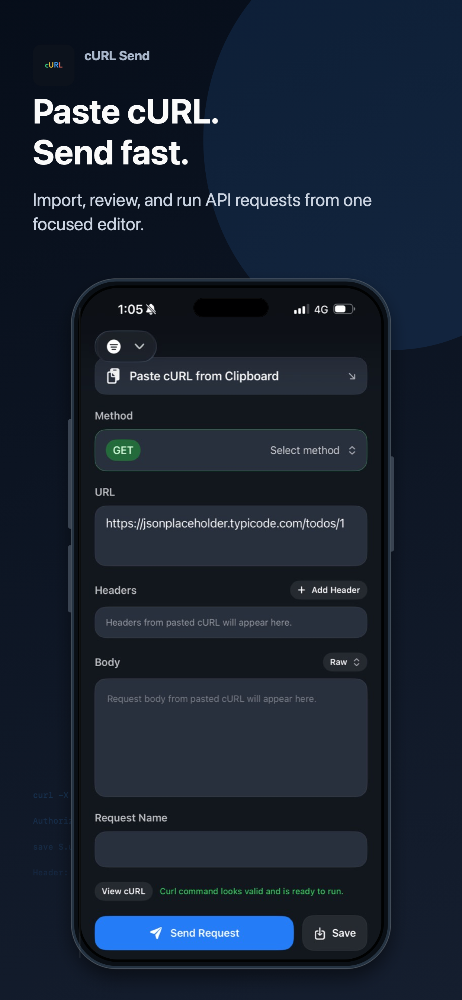
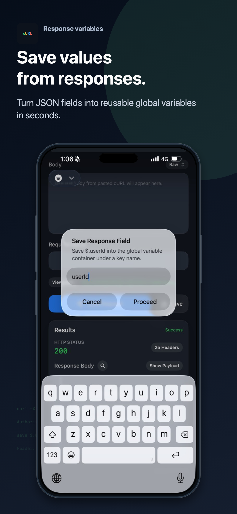
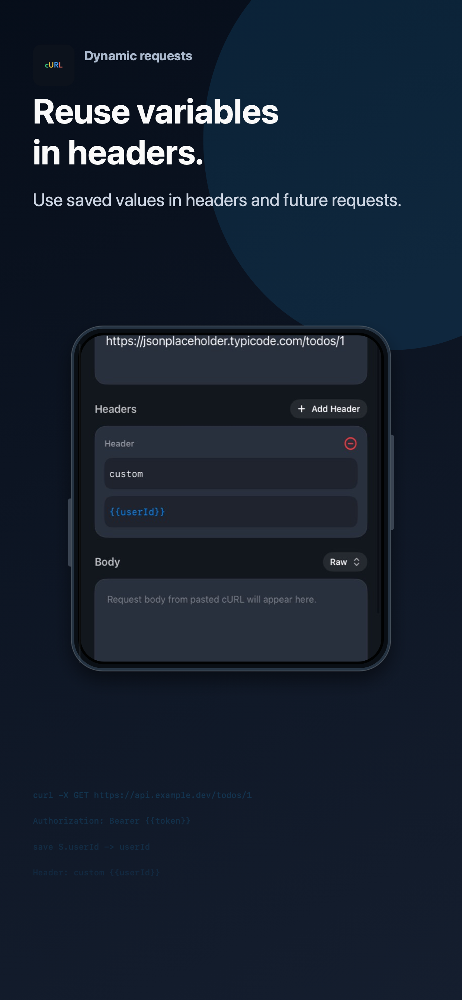

Compose from cURL
Paste a practical cURL command, then edit the parsed method, URL, headers, and body without leaving the app.
iOS Developer Tool
Import, review, and run API requests from one focused mobile workspace. Built for quick checks, reusable request details, and response values you can carry forward.

Focused API Workflow
Paste a practical cURL command, then edit the parsed method, URL, headers, and body without leaving the app.
Turn supported JSON response fields into reusable local variables when a request returns data you need again.
Requests are sent from your iPhone to the endpoint you choose, with status, headers, and response body shown in one place.
Response Variables
cURL Send helps turn common JSON response values into a local Global Container, so tokens such as {{userId}} can be reused in headers and future requests.


Private by Design
Saved requests, request history, onboarding state, and global variables are stored locally on your device. Network requests are sent only to endpoints you provide in your own cURL commands.